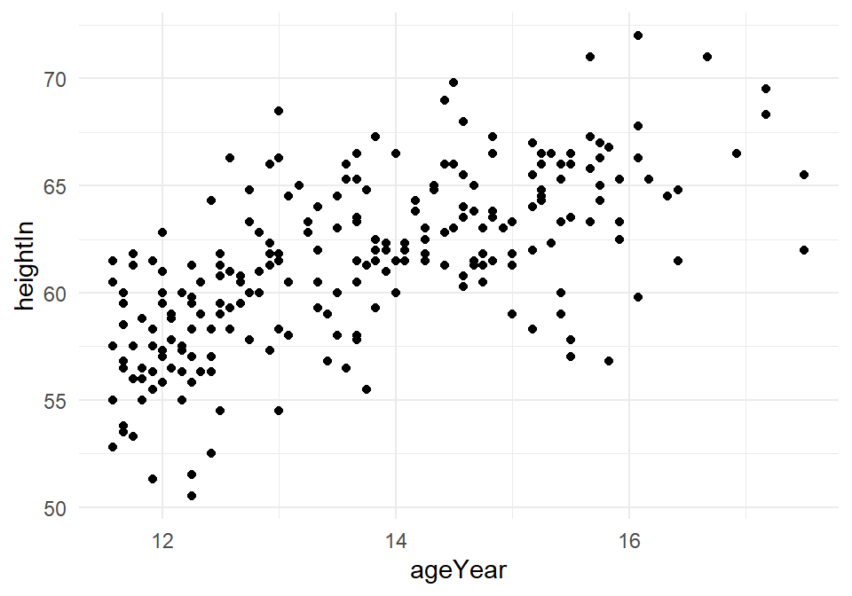
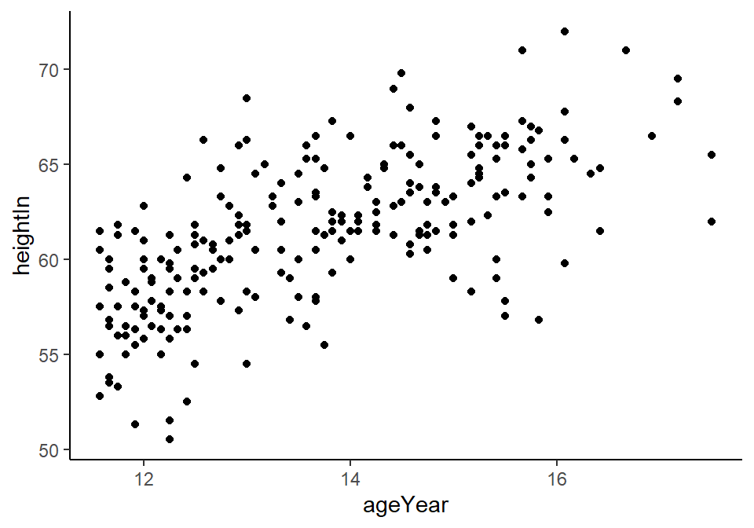
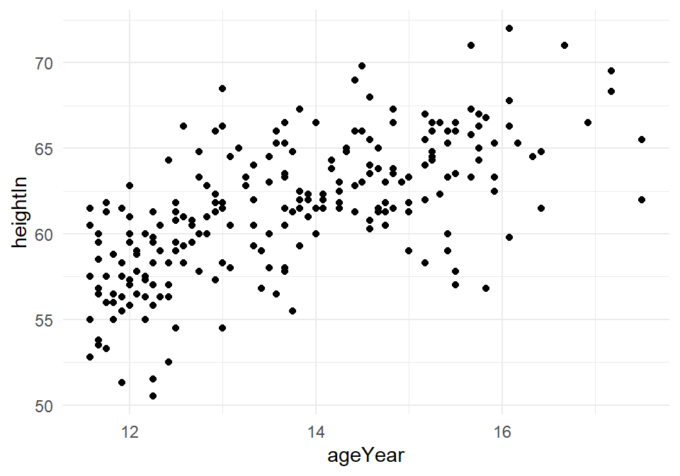
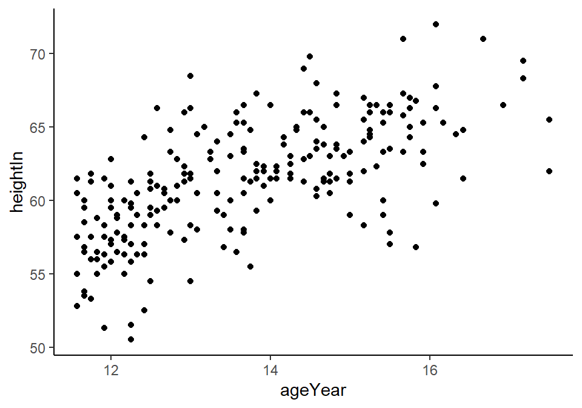

Chapter 8 Line Graphs
Line graphs are typically used for visualizing how one continuous variable, on the y-axis, changes in relation to another continuous variable, on the x-axis. Often the x variable represents time, but it may also represent some other continuous quantity, for example, the amount of a drug administered to experimental subjects.
As with bar graphs, there are exceptions. Line graphs can also be used with a discrete variable on the x-axis. This is appropriate when the variable is ordered (e.g., “small”, “medium”, “large”), but not when the variable is unordered (e.g., “cow”, “goose”, “pig”). Most of the examples in this chapter use a continuous x variable, but we’ll see one example where the variable is converted to a factor and thus treated as a discrete variable.
Let us prepare for this chapter by first importing a Vo2 treadmill test data that we have cleaned, and placed in the data folder. See Recipe 6.14. The Excel sheet is called "treadmill_pt4_clean.xlsx".
dat <- read.xlsx (xlsxFile = "data/treadmill_pt4_clean.xlsx",
sheet = "Sheet1")
dat <- dat %>%
mutate (stage = cut_interval(time, length = 210, labels = FALSE)) %>%
group_by(stage) %>%
slice(c(31:36)) %>%
summarise_at (vars(bf:hr), mean)8.1 Making a Basic Line Graph
8.1.1 Problem
You want to make a basic line graph.
8.1.2 Solution
Use ggplot() with geom_line(), and specify which variables you mapped to x and y (Figure 8.1):
Figure 8.1: Basic line graph
8.1.3 Discussion
In this sample data set, the x variable, time, is in one column and the y variable, vo2, is in another:
dat
#> # A tibble: 7 x 8
#> stage bf vo2_norm rer vo2 vco2 ve hr
#> <int> <dbl> <dbl> <dbl> <dbl> <dbl> <dbl> <dbl>
#> 1 1 30.7 32.0 0.868 2053. 1778. 55.2 136.
#> 2 2 34.7 34.6 0.882 2222. 1958. 59.3 147
#> 3 3 34.7 37.4 0.912 2402. 2191. 66.7 161.
#> 4 4 38 37.8 0.95 2429 2312. 71.2 172.
#> 5 5 44 41.7 1.00 2675 2686 85.7 178.
#> 6 6 45.7 43.8 1.06 2814. 2981. 99.8 186.
#> # ... with 1 more rowWith ggplot2, the default y range of a line graph is just enough to include the y values in the data. For some kinds of data, it’s better to have the y range start from zero. You can use ylim() to set the range, or you can use expand_limits() to expand the range to include a value. This will set the range from zero to the maximum value of the demand column in BOD (Figure 8.2):
# These have the same result
ggplot(dat) +
geom_line(aes(x = stage, y = vo2)) +
ylim(0, max(dat$vo2))
ggplot(dat) +
geom_line(aes(x = stage, y = vo2)) +
expand_limits(y = 0)Figure 8.2: Line graph with manually set y range
8.2 Adding Points to a Line Graph
8.2.1 Problem
You want to add points to a line graph.
8.2.3 Discussion
Sometimes it is useful to indicate each data point on a line graph. This is helpful when the density of observations is low, or when the observations do not happen at regular intervals.
In an external worldpop data set that comes with the installed packages, the intervals between each data point are not consistent. In the far past, the estimates were not as frequent as they are in the more recent past. Displaying points on the graph illustrates when each estimate was made (Figure 8.4):
library(gcookbook) # Load gcookbook for the worldpop data set
ggplot(worldpop) +
geom_line(aes(x = Year, y = Population)) +
geom_point(aes(x = Year, y = Population))
# Same with a log y-axis
ggplot(worldpop) +
geom_line(aes(x = Year, y = Population)) +
geom_point(aes(x = Year, y = Population)) +
scale_y_log10()Figure 8.4: Top: points indicate where each data point is; bottom: the same data with a log y-axis
With the log y-axis, you can see that the rate of proportional change has increased in the last thousand years. The estimates for the years before 0 have a roughly constant rate of change of 10 times per 5,000 years. In the most recent 1,000 years, the population has increased at a much faster rate. We can also see that the population estimates are much more frequent in recent times–and probably more accurate!
8.3 Making a Line Graph with Multiple Lines
8.3.1 Problem
You want to make a line graph with more than one line.
8.3.2 Solution
In addition to the variables mapped to the x- and y-axes, map another (discrete) variable to colour or linetype, as shown in Figure 8.5:
# Bring all variables into one column
dat_long <- dat %>%
pivot_longer(cols = c(bf:hr),
names_to = "var",
values_to = "val") %>%
filter (var %in% c("vco2", "vo2")) %>%
mutate (var = factor (var))
# Map supp to colour
ggplot(dat_long) +
geom_line(aes(x = stage, y = val, colour = var))
# Map supp to linetype
ggplot(dat_long) +
geom_line(aes(x = stage, y = val, linetype = var))Figure 8.5: A variable mapped to colour (left); A variable mapped to linetype (right)
8.3.3 Discussion
The dat_long data has three columns, including the factor var, which we mapped to colour and linetype:
dat_long
#> # A tibble: 14 x 3
#> stage var val
#> <int> <fct> <dbl>
#> 1 1 vo2 2053.
#> 2 1 vco2 1778.
#> 3 2 vo2 2222.
#> 4 2 vco2 1958.
#> 5 3 vo2 2402.
#> 6 3 vco2 2191.
#> # ... with 8 more rowsNote
If the x variable is a factor, you must also tell ggplot to group by that same variable, as described below.
Line graphs can be used with a continuous or categorical variable on the x-axis. Sometimes the variable mapped to the x-axis is conceived of as being categorical, even when it’s stored as a number. In the example here, there are eight values of stage: 1, 2, 3, 4, 5, 6, 7, 8. You may want to treat these as categories rather than values on a continuous scale. To do this, convert stage to a factor (Figure 8.6):
Figure 8.6: Line graph with continuous x variable converted to a factor
To convert a variable to a factor , see also Recipe 6.10.
Notice the use of group = var. Without this statement, ggplot won’t know how to group the data together to draw the lines, and it will give an error:
ggplot(dat_long) +
geom_line(aes(x = factor (stage), y = val, colour = var))
#> geom_path: Each group consists of only one observation. Do you need to
#> adjust the group aesthetic?Another common problem when the incorrect grouping is used is that you will see a jagged sawtooth pattern, as in Figure 8.7:
ggplot(dat_long) +
geom_line(aes(x = stage, y = val)) +
geom_point(aes(x = stage, y = val, shape = var),
size = 4)Figure 8.7: A sawtooth pattern indicates improper grouping
This happens because there are multiple data points at each y location, and ggplot thinks they’re all in one group. The data points for each group are connected with a single line, leading to the sawtooth pattern. If any discrete variables are mapped to aesthetics like colour or linetype, they are automatically used as grouping variables. But if you want to use other variables for grouping (that aren’t mapped to an aesthetic), they should be used with group.
Note
When in doubt, if your line graph looks wrong, try explicitly specifying the grouping variable with group. It’s common for problems to occur with line graphs because ggplot is unsure of how the variables should be grouped.
If your plot has points along with the lines, you can also map variables to properties of the points, such as shape and fill (Figure 8.8):
ggplot(dat_long) +
geom_line(aes(x = stage, y = val, shape = var)) +
geom_point(aes(x = stage, y = val, shape = var),
size = 4) # Make the points a little larger
#> Warning: Ignoring unknown aesthetics: shape
ggplot(dat_long) +
geom_line(aes(x = stage, y = val, fill = var)) +
geom_point(aes(x = stage, y = val, fill = var),
size = 4, shape = 21) # Also use a point with a color fill
#> Warning: Ignoring unknown aesthetics: fillFigure 8.8: Line graph with different shapes (left); With different colors (right)
Sometimes points will overlap. In these cases, you may want to dodge them, which means their positions will be adjusted left and right (Figure 8.9). When doing so, you must also dodge the lines, or else only the points will move and they will be misaligned. You must also specify how far they should move when dodged:
ggplot(dat_long) +
geom_line(aes(x = stage, y = val, shape = var),
position = position_dodge(0.2)) + # Dodge lines by 0.2
geom_point(aes(x = stage, y = val, fill = var),
position = position_dodge(0.2), size = 4) # Dodge points by 0.2
#> Warning: Ignoring unknown aesthetics: shapeFigure 8.9: Dodging to avoid overlapping points
8.4 Changing the Appearance of Lines
8.4.1 Problem
You want to change the appearance of the lines in a line graph.
8.4.2 Solution
The type of line (solid, dashed, dotted, etc.) is set with linetype, the thickness (in mm) with size, and the color of the line with colour (or color).
These properties can be set (as shown in Figure 8.10) by passing them values in the call to geom_line():
Figure 8.10: Line graph with custom linetype, size, and colour
If there is more than one line, setting the aesthetic properties will affect all of the lines. On the other hand, mapping variables to the properties, as we saw in Recipe 8.3, will result in each line looking different. The default colors aren’t the most appealing, so you may want to use a different palette, as shown in Figure 8.11, by using scale_colour_brewer() or scale_colour_manual():
ggplot(dat_long) +
geom_line(aes(x = stage, y = val, colour = var)) +
scale_colour_brewer(palette = "Set1")Figure 8.11: Using a palette from RColorBrewer
8.4.3 Discussion
To set a single constant color for all the lines, specify colour outside of aes(). The same works for size, linetype, and point shape (Figure 8.12). You may also have to specify the grouping variable:
# If both lines have the same properties, you need to specify a variable to
# use for grouping
ggplot(dat_long) +
geom_line(aes(x = stage, y = val, group = var),
colour = "darkgreen", size = 1.5)
# Since supp is mapped to colour, it will automatically be used for grouping
ggplot(dat_long) +
geom_line(aes(x = stage, y = val, colour = var), linetype = "dashed") +
geom_point(aes(x = stage, y = val, colour = var),shape = 22, size = 3, fill = "white")
Figure 8.12: Line graph with constant size and color (left); With supp mapped to colour, and with points added (right)
The range of different linetypes that is available can be seen in (Figure 8.13)
Figure 8.13: The different types of linetype you can use.
8.5 Changing the Appearance of Points
8.5.1 Problem
You want to change the appearance of the points in a line graph.
8.5.2 Solution
In geom_point(), set the size, shape, colour, and/or fill outside of aes() (the result is shown in Figure 8.14):
ggplot(dat) +
geom_line(aes(x = stage, y = vo2)) +
geom_point(aes(x = stage, y = vo2), size = 4, shape = 22, colour = "darkred", fill = "pink")Figure 8.14: Points with custom size, shape, color, and fill
8.5.3 Discussion
The default shape for points is a solid circle, the default size is 2, and the default colour is black. The fill color is relevant only for some point shapes (numbered 21–25), which have separate outline and fill colors . The fill color is typically NA, or empty; you can fill it with white to get hollow-looking circles, as shown in Figure 8.15:
ggplot(dat) +
geom_line(aes(x = stage, y = vo2)) +
geom_point(aes(x = stage, y = vo2), size = 4, shape = 21, fill = "white")Figure 8.15: Points with a white fill
There are plethora of point types that is availabe in R, which you can see below (Figure 8.16).
Figure 8.16: Point types available in R.
If the points and lines have different colors, you should specify the points after the lines, so that they are drawn on top. Otherwise, the lines will be drawn on top of the points.
8.6 Using Themes to Change Overall Appearance of Plot
8.6.1 Problem
You want to use premade themes to control the overall plot appearance.
8.6.2 Solution
There are many premade themes that are already included in ggplot2. The default ggplot2 theme is theme_grey(), but the examples below also showcase theme_bw(), theme_minimal(), and theme_classic().
To use a premade theme, add theme_bw() or another theme to your plot (Figure 8.17):
library(gcookbook) # Load gcookbook for the heightweight data set
# Create the base plot
hw_plot <- ggplot(heightweight, aes(x = ageYear, y = heightIn)) +
geom_point()
# Grey theme (the default)
hw_plot +
theme_grey()
# Black-and-white theme
hw_plot +
theme_bw()
# Minimal theme without background annotations
hw_plot +
theme_minimal()
# Classic theme, with axis lines but no gridlines
hw_plot +
theme_classic() 

Figure 8.17: Scatter plot with theme_grey() (the default, top left); with theme_bw() (top right); with theme_minimal() (bottom left); with theme_classic() (bottom right)
Another theme included in ggplot2 is theme_void(), which makes all plot elements blank and only shows your data (Figure 8.18. This is especially useful if you don’t want any default theme settings, and instead want a blank slate on which to choose your own theme elements.
Figure 8.18: Scatter plot with theme_void()
8.6.3 Discussion
Some commonly used properties of theme elements in ggplot2 are those things that are controlled by theme(). Most of these things, like the title, legend, and axes, are outside the plot area, but some of them are inside the plot area, such as grid lines and the background coloring.
Besides the themes included in ggplot2, it is also possible to create your own.
You can set the base font family and size with either of the included themes (the default base font family is Helvetica, and the default size is 12):
You can set the default theme for the current R session with theme_set(), although it’s generally not a good idea to set options globally because it may affect other plots that are unrelated to your current project:
8.7 Learning check
From your learning check in 7.8, open up your
practice_script.R.Import the Excel file
data/treadmill_pt4_clean.xlsx, and the sheetSheet1, and assign it to an objectdat. See Recipe 5.2.Create another dataset,
dat_summ, and create another variable calledstage, where you create intervals of stage each of 3:30min intervals. See Recipe 6.5.Using the data
dat_summ, keep the interval of 2:30 to 3:00min of data at each stage of VO2 testing. See Recipe 6.14.From step 5, find the mean of each 30s of data of each stage, across all variables. See Recipe 6.14.
Make a line plot with with
vo2as the x axis, andvo2as the y axis. See Recipe 8.1.